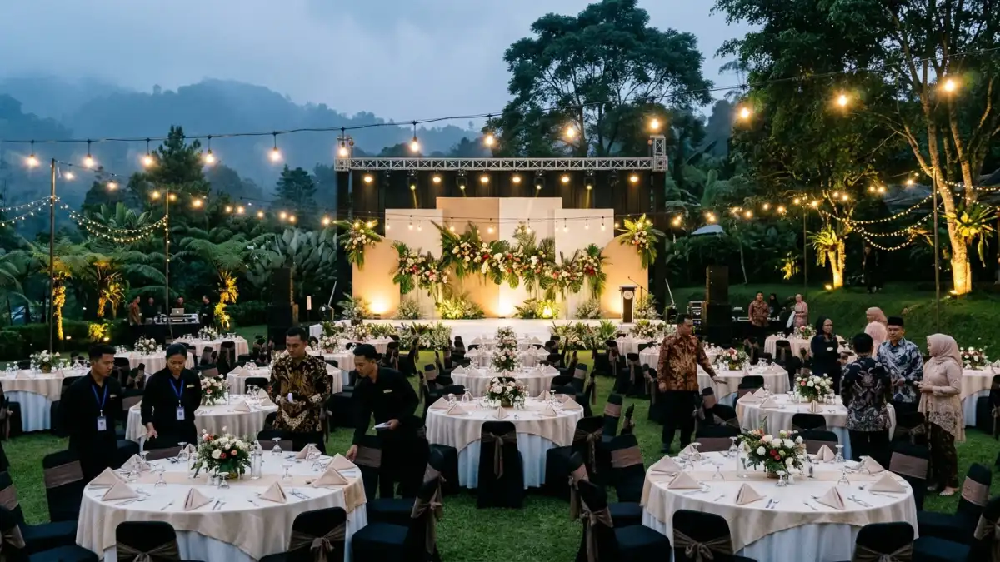

Udara sejuk dan pemandangan malam pegunungan menjadikan Batu lokasi
ideal untuk gala dinner outdoor perusahaan. (Ilustrasi)
Udara sejuk dan pemandangan malam pegunungan menjadikan Batu lokasi
ideal untuk gala dinner outdoor perusahaan. (Ilustrasi)
Paket gala dinner outdoor Batu adalah layanan acara makan malam formal di ruang terbuka Kota Batu, lengkap dengan venue, katering, dekorasi, dan hiburan.
- Paket gala dinner outdoor Batu umumnya mencakup venue, katering, tata panggung, tata suara, pencahayaan, dan pemandu acara.
- Udara sejuk dan pemandangan pegunungan menjadi nilai jual utama Kota Batu untuk acara malam hari.
- Kapasitas, tema, anggaran, dan antisipasi cuaca adalah empat faktor utama pemilihan paket.
- Kesalahan paling umum adalah tidak menyiapkan rencana cadangan hujan dan tidak menghitung kebutuhan penghangat tamu.
- Pemesanan ideal dilakukan jauh hari sebelum acara agar venue dan vendor tidak penuh.
DAFTAR ISI
- 1. Apa Itu Paket Gala Dinner Outdoor Batu?
- 2. Mengapa Kota Batu Cocok untuk Gala Dinner Outdoor?
- 3. Apa Saja yang Termasuk dalam Paket Gala Dinner Outdoor Batu?
- 4. Bagaimana Cara Kerja dan Alur Pemesanan Paket Gala Dinner Outdoor?
- 5. Faktor Apa yang Menentukan Pilihan Paket Gala Dinner Outdoor Batu?
- 6. Apa Perbedaan Gala Dinner Outdoor dan Indoor?
- 7. Apa Kesalahan Umum dalam Merencanakan Gala Dinner Outdoor di Batu?
- 8. Bagaimana Tips Menyiapkan Gala Dinner Outdoor di Batu agar Berjalan Lancar?
- 9. Kesimpulan
1. Apa Itu Paket Gala Dinner Outdoor Batu?
Paket gala dinner outdoor Batu adalah rangkaian layanan terpadu untuk makan malam resmi di area terbuka di Kota Batu, Jawa Timur, yang dikemas dalam satu penawaran.
Gala dinner adalah acara makan malam formal yang biasanya menjadi puncak rangkaian kegiatan perusahaan, seperti gathering, family gathering, rapat kerja, seminar nasional, atau pertemuan dealer.
Versi outdoor memindahkan acara dari ballroom ke taman, halaman villa, area resort, kebun, atau lapangan terbuka. Paket menyatukan banyak kebutuhan, sehingga panitia tidak perlu mengurus vendor satu per satu.
Paket ini ditujukan bagi HRD, panitia acara, event organizer, dan pimpinan instansi yang ingin suasana berbeda dari hotel konvensional.
Penggunaannya paling sering pada akhir hari kegiatan, ketika peserta sudah menyelesaikan agenda formal dan membutuhkan suasana santai namun tetap berkelas.
Manfaat utamanya adalah suasana yang akrab, pemandangan alam, dan fleksibilitas tema. Batasannya terletak pada ketergantungan terhadap cuaca dan suhu malam yang dingin.
2. Mengapa Kota Batu Cocok untuk Gala Dinner Outdoor?
Kota Batu cocok untuk gala dinner outdoor karena berhawa sejuk, berlatar pegunungan, dan memiliki banyak pilihan venue wisata yang sudah terbiasa melayani acara kelompok besar.
Kota Batu berada di dataran tinggi di kaki Gunung Arjuno-Welirang dan Gunung Panderman. Kawasan wisata utamanya umumnya berada di kisaran 800 sampai 1.100 meter di atas permukaan laut, sehingga suhu malam hari cenderung dingin dibandingkan kota di dataran rendah.
Suasana yang sejuk memungkinkan para tamu merasakan kenyamanan maksimal ketika berada di area terbuka tanpa memerlukan sistem pendingin udara, khususnya selama acara makan malam yang berlangsung selama dua hingga tiga jam.
Faktor lain adalah ekosistem pariwisata. Batu dikenal sebagai kota wisata dengan banyak hotel, villa, resort, taman rekreasi, dan agrowisata.
Rombongan dari Surabaya, Malang, maupun luar Jawa dapat menginap dan melaksanakan acara dalam satu kawasan. Pemandangan lampu kota dari ketinggian pada malam hari juga menjadi latar visual alami yang sulit ditiru di ballroom.
Dari sisi aksesibilitas, Batu berjarak sekitar satu jam perjalanan dari pusat Kota Malang dan terhubung dengan jalur tol di wilayah Malang Raya.
Panitia perlu tetap memperhitungkan kepadatan lalu lintas pada akhir pekan dan musim libur, karena kawasan wisata sering ramai dan dapat memengaruhi waktu kedatangan peserta.
3. Apa Saja yang Termasuk dalam Paket Gala Dinner Outdoor Batu?
Paket gala dinner outdoor Batu biasanya mencakup sewa area, katering, dekorasi, panggung, tata suara, pencahayaan, hiburan, serta tim pelaksana, dengan rincian yang berbeda pada tiap penyedia.
Karena komponen paket tidak seragam, panitia perlu meminta rincian tertulis. Berikut komponen yang umumnya muncul.
- Venue dan tata area. Sewa lokasi, penataan meja, kursi, area registrasi, area foto, dan jalur tamu.
- Katering. Menu buffet, set menu, atau stasiun makanan, termasuk minuman dan pilihan menu khusus seperti vegetarian atau tanpa bahan tertentu.
- Dekorasi. Backdrop, rangkaian bunga, lampu hias, taplak, dan elemen tema.
- Panggung dan tata suara. Panggung, layar, mikrofon, speaker, dan operator.
- Pencahayaan. Lampu sorot, lampu string, dan lampu jalur yang aman untuk tamu.
- Hiburan. Live music, band, penyanyi, tari, atau permainan interaktif.
- Pemandu acara. Master of ceremony dan koordinator lapangan.
- Perlengkapan pendukung. Tenda atau tenda cadangan, penghangat area, genset, dan toilet portabel bila lokasi memerlukannya.
Beberapa penyedia juga menawarkan tambahan seperti api unggun, kembang api, fotografer, dokumentasi video, dan transportasi.
Komponen tambahan umumnya dihitung terpisah, sehingga perlu ditanyakan sejak awal agar tidak muncul biaya tak terduga.

Dekorasi yang memadukan elemen lampu string dan tata meja elegan menciptakan suasana makan malam yang berkesan. (Ilustrasi)4. Bagaimana Cara Kerja dan Alur Pemesanan Paket Gala Dinner Outdoor?
Alur pemesanan paket gala dinner outdoor umumnya dimulai dari penentuan kebutuhan, survei lokasi, penawaran, kontrak, hingga gladi sebelum hari pelaksanaan.
Berikut urutan yang lazim dijalankan.
- Menentukan kebutuhan. Panitia menetapkan tanggal, jumlah peserta, tema, dan batas anggaran.
- Mengajukan permintaan penawaran. Panitia telah menjalin komunikasi dengan sejumlah penyedia layanan dan meminta agar mereka menyampaikan proposal tertulis yang mencakup penjelasan detail mengenai setiap komponen yang ditawarkan.
- Survei lokasi. Panitia mengecek akses, area parkir, lampu, fasilitas toilet, dan area yang terlindung bila hujan.
- Negosiasi dan kontrak. Kedua pihak menyepakati harga, jadwal pembayaran, kebijakan perubahan jumlah peserta, dan ketentuan pembatalan.
- Penyusunan rundown. Penyedia layanan dan panitia penyelenggara melakukan penyesuaian terhadap struktur acara, jangka waktu pelaksanaan, serta tanggung jawab dan fungsi yang akan diemban oleh setiap pihak.
- Gladi dan penyesuaian. Tim melakukan uji suara, uji lampu, dan simulasi alur tamu.
- Hari pelaksanaan. Tim lapangan memasang perlengkapan beberapa jam sebelum tamu datang dan membongkar setelah acara selesai.
Alur ini dapat dipercepat untuk acara kecil, tetapi acara dengan ratusan peserta sebaiknya disiapkan dalam hitungan minggu, bukan hari.
Pemesanan jauh hari membantu menghindari bentrok jadwal, terutama pada akhir pekan dan masa libur.
5. Faktor Apa yang Menentukan Pilihan Paket Gala Dinner Outdoor Batu?
Pilihan paket gala dinner outdoor Batu ditentukan oleh jumlah tamu, tema acara, anggaran, kualitas venue, kesiapan menghadapi cuaca, dan reputasi penyedia.
- Jumlah dan profil tamu. Kuantitas peserta menjadi faktor penentu dalam menghitung luas wilayah, jumlah meja yang diperlukan, dan volume layanan katering yang akan disediakan. Profil tamu, misalnya jajaran direksi, karyawan, atau keluarga, memengaruhi gaya acara. Acara keluarga membutuhkan area aman bagi anak, sedangkan acara eksekutif lebih menekankan kesan formal.
- Tema dan konsep. Tema rustic garden, modern elegan, tradisional Nusantara, atau black tie menuntut dekorasi dan hiburan yang berbeda. Konsep yang jelas membantu penyedia menyusun penawaran yang tepat sasaran.
- Anggaran. Anggaran dibagi untuk katering, dekorasi, hiburan, dan cadangan. Panduan praktis adalah menyisihkan sebagian anggaran untuk kontingensi, misalnya perubahan jumlah tamu atau perlengkapan tambahan.
- Kualitas venue. Pastikan venue memiliki akses jalan yang layak, area parkir cukup, penerangan jalur, fasilitas toilet, dan sumber listrik yang stabil.
- Kesiapan cuaca. Karena acara berlangsung di ruang terbuka, penyedia perlu menyiapkan tenda, area teduh, atau lokasi pengganti. Musim hujan di kawasan Jawa Timur biasanya terjadi pada akhir tahun hingga awal tahun, oleh karena itu rekomendasi dari BMKG perlu diperhatikan dengan seksama sebelum pelaksanaan acara.
- Reputasi penyedia. Tanyakan portofolio acara sejenis, referensi klien, dan kejelasan struktur tim. Penyedia yang transparan umumnya bersedia menunjukkan dokumentasi acara sebelumnya.
Untuk pembahasan angka dan komponen biaya secara rinci, baca panduan tentang harga paket gala dinner outdoor Batu. Untuk menyusun jalannya acara, pelajari rundown meeting alam terbuka di Batu sebagai referensi kegiatan.
6. Apa Perbedaan Gala Dinner Outdoor dan Indoor?
Gala dinner outdoor berlangsung di ruang terbuka dengan suasana alami dan fleksibel, sedangkan gala dinner indoor berlangsung di ruang tertutup yang terkendali dari sisi suhu, suara, dan cuaca.
| Aspek | Gala Dinner Outdoor | Gala Dinner Indoor |
|---|---|---|
| Suasana | Alami, santai, berlatar pemandangan | Formal, terkendali |
| Ketergantungan cuaca | Tinggi, perlu rencana cadangan | Rendah |
| Suhu | Dingin pada malam hari di Batu | Dapat diatur pendingin atau pemanas |
| Fleksibilitas tata letak | Tinggi, area luas | Terbatas ukuran ruang |
| Kontrol suara | Lebih sulit, suara menyebar | Lebih mudah |
| Biaya perlengkapan | Dapat lebih tinggi untuk tenda dan listrik | Cenderung lebih stabil |
| Kesan visual | Kuat untuk foto dan dokumentasi | Bergantung dekorasi ruangan |
Pilihan outdoor cocok bila panitia mengejar kesan berbeda dan jumlah peserta besar. Pilihan indoor lebih aman bila acara bersifat sangat formal, mengandung presentasi dengan layar sensitif cahaya, atau jadwalnya jatuh pada puncak musim hujan. Beberapa penyelenggara memilih format hibrida: sesi sambutan di ruang tertutup, lalu makan malam dan hiburan di area terbuka.
7. Apa Kesalahan Umum dalam Merencanakan Gala Dinner Outdoor di Batu?
Kesalahan umum perencanaan gala dinner outdoor di Batu meliputi tidak menyiapkan rencana hujan, mengabaikan suhu dingin, salah menghitung kapasitas, dan tidak membaca rincian kontrak.
- Tidak ada rencana cadangan cuaca. Hujan malam hari relatif mudah terjadi di dataran tinggi. Tanpa tenda atau area pengganti, acara dapat terhenti dan tamu tidak nyaman.
- Mengabaikan suhu dingin. Tamu yang mengenakan busana formal tipis akan kedinginan. Sediakan penghangat area, selimut, atau imbauan dress code yang mempertimbangkan suhu malam.
- Salah menghitung kapasitas. Kursi, meja, area panggung, dan jalur tamu membutuhkan ruang. Menjejalkan terlalu banyak meja membuat pelayanan katering terhambat.
- Pencahayaan dan akses yang kurang. Area tanah, rumput, atau tangga tanpa lampu jalur berisiko bagi tamu, terutama yang mengenakan sepatu hak tinggi.
- Tidak membaca kontrak. Hal yang sering terlewat antara lain batas waktu perubahan jumlah peserta, biaya lembur, dan tanggung jawab bila terjadi pembatalan akibat cuaca.
- Rundown terlalu padat. Acara yang terlalu banyak sesi membuat tamu lelah dan perhatian menurun. Sisakan jeda untuk makan, berbincang, dan berfoto.
8. Bagaimana Tips Menyiapkan Gala Dinner Outdoor di Batu agar Berjalan Lancar?
Gala dinner outdoor di Batu berjalan lancar bila panitia memesan lebih awal, melakukan survei lokasi, menyiapkan rencana cadangan hujan, dan menjalankan gladi sebelum hari acara.
- Pesan jauh hari. Venue favorit dan vendor berkualitas cepat penuh pada akhir pekan.
- Lakukan survei pada jam yang sama. Kunjungi lokasi pada malam hari untuk melihat penerangan, suhu, dan kebisingan sekitar.
- Siapkan skenario hujan. Tentukan titik pindah, tenda, atau ruang pengganti dan ketahui siapa yang memutuskan perpindahan.
- Pantau prakiraan cuaca. Cek informasi BMKG di bmkg.go.id beberapa hari sebelum acara dan pada hari pelaksanaan.
- Pilih menu yang tepat untuk udara dingin. Hidangan hangat, sup, dan minuman panas sangat diminati pada malam hari di Batu.
- Batasi durasi hiburan. Susun pertunjukan yang ringkas dan variatif agar tamu tetap terlibat.
- Tunjuk koordinator tamu. Satu orang khusus mengurus kedatangan, parkir, dan arahan tempat duduk.
- Dokumentasikan acara. Siapkan fotografer dan videografer untuk kebutuhan laporan dan promosi internal.
Panitia yang disiplin pada langkah-langkah ini umumnya menekan risiko gangguan di lapangan dan menjaga pengalaman tamu tetap nyaman dari awal hingga akhir.
9. Kesimpulan
Paket gala dinner outdoor Batu menawarkan suasana sejuk, pemandangan pegunungan, dan fleksibilitas konsep yang sulit didapat di ballroom. Pilih paket berdasarkan jumlah tamu, tema, anggaran, dan kesiapan menghadapi cuaca.
Minta rincian komponen secara tertulis, lakukan survei malam hari, siapkan rencana hujan, dan jalankan gladi. Dengan persiapan tersebut, acara dapat berlangsung lancar dan berkesan.